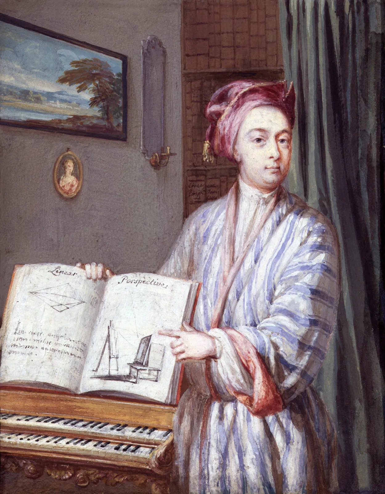
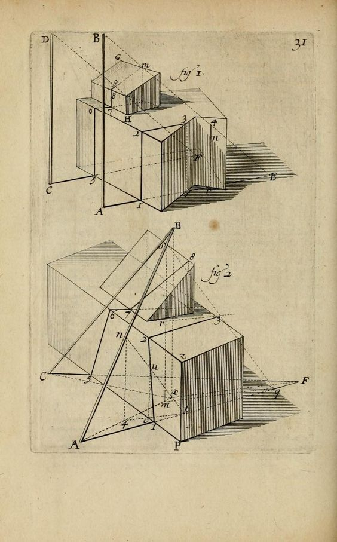
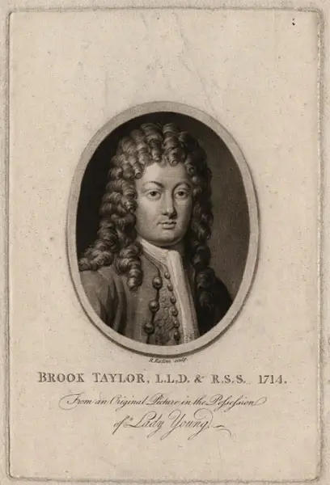

Brook Taylor was born in Born in Edmonton, Middlesex, England, parented by John Taylor and Olivia Tempest.
1685
1701
Education
Brook Taylor enrolled in St. John’s College, Cambridge to study law.
Graduation
Brook Taylor completed his Bachelor of Laws (LL.B) degree, and later his doctorate.
1709
1712

Royal Society
Brook Taylor was elected a fellow of the Royal Society of London, one of the oldest and most prestigious scientific institutions in the world. It was founded to promote the advancement of science through observation and experimentation.
First Publications
Taylor published his first important mathematical paper that provided a solution to the problem regarding the center of oscillation of a body.
1714
1715
Methodus Incrementorum
Taylor publishes arguably his most influencial paper, Direct and Indirect Methods of Incrementation (Methodus Incrementorum Directa et Inversa) which included various contributions to calculus as a field.

Linear Perspectives
Taylor publised his findings in Linear Perspective and New Principles of Linear Perspective.
1719
1731

Death
Brook Taylor dies at the age of 46, in London, England.